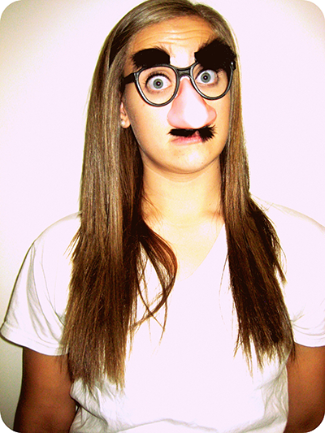

Hey there! I’m Brittany and that girl currently starring you down in the funny glasses through the computer screen is me.
Currently, I am a junior graphic design major at Massart. I try to incorporate alot of my hand-drawn skill sets into my work
whenever possible but also maintain a high standard for creating simple and clean designs. I’m also never afraid to run with my odd ways of thinking if I think I might be headed somewhere exciting!
